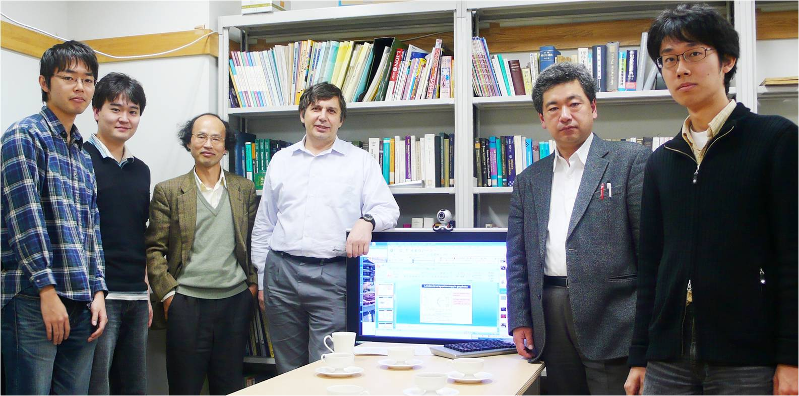

新着情報 一覧
2021
- 青木は、「固体物理」誌に、「物性物理学のルネサンス ― 超伝導、トポロジカル系、非平衡」と題した シリーズを連載していたが、それが第四回で完結した。 （連載全体の原稿はこちら）
2020
- 銅以外の化合物での高温超伝導探索は長年の懸案であったが最近Stanfordで 実験的にニッケル酸化物超伝導体(Nd,Sr)NiO2において発見された。青木は榊原（鳥取大）等の グループと、この物質の電子状態計算から出発して超伝導の電子機構を調べ、この系では電子間斥力が強過ぎるために Tcが銅酸化物より抑制されている等を示した [H. Sakakibara, H. Usui, K. Suzuki, T. Kotani, H. Aoki, and K. Kuroki: Model construction and a possibility of cuprate-like pairing in a new d9 nickelate superconductor (Nd,Sr)NiO2, Phys. Rev. Lett. 125, 077003 (2020) (Editors' suggestion)]。
- Li (Chinese Academy of Sciences)、内田（産総研）等のグループが、新しい銅酸化物Ba2CuO3+δにおいて Tc=70 K級の超伝導を発見して2019年に報告した。従来は銅酸化物高温超伝導にはCuO2面が必須との常識 に反して新物質では面内酸素の数割が欠損しており、理論的なチャレンジとなる。 黒木のグループと青木は、可能な結晶構造候補として銅原子から成るLieb格子 （平坦バンド模型として知られる）を提案し、超伝導の電子機構において 軌道内ペアリングと軌道間ペアリングが共存し、そこでは多軌道性が意外にも超伝導を有利化、 平坦バンドと分散バンドの間で符号反転するs±波超伝導が増強される ことを示した。さらに、Lieb模型における超伝導と、通常の銅 酸化物に対する２軌道模型や、２層Hubbard模型における超伝導の間に密接な関連があることも示された [K. Yamazaki, M. Ochi, D. Ogura, K. Kuroki, H. Eisaki, S. Uchida, and H. Aoki: Superconducting mechanism for a new-type cuprate Ba2CuO3+δ based on a multiorbital Lieb lattice model, Phys. Rev. Research 2, 033356 (2020)]。
- Hafezi (Maryland) 等のグループと青木は、グラフェンに代表される系のトポロジカルな性質を光で in situに制御する新たな方法として、空間周期的な円偏光を照射 することにより、Chern数やFloquetバンド構造の制御ができることを 提案した [H. Kim, H. Dehghani, H. Aoki, I. Martin, and M. Hafezi: Optical imprinting of superlattices in 2D materials, Phys. Rev. Research 2, 043004 (2020)]。
- 青木は、「固体物理」誌に、「物性物理学のルネサンス ― 超伝導、トポロジカル系、非平衡」と題した シリーズの連載を開始した。 （連載第一回の原稿はこちら）
- 岡・青木が理論的に予言した [Takashi Oka and Hideo Aoki, Phys. Rev. B 79, 081406(R) (2009)]、 グラフェンに円偏光を照射するとトポロジカル絶縁体になる、という 現象が、ハンブルクのマックス・プランク研究所の James McIver等により実証され、Nature Physics 16, 38 (2020)に出版され、表紙も飾った。
- 部分的に平坦なバンドにおいて、特異な 非従来型超伝導が生じることを理論的に示した論文が、 Sharareh Sayyad, Edwin W. Huang, Motoharu Kitatani, Mohammad-Sadegh Vaezi, Zohar Nussinov, Abolhassan Vaezi and Hideo Aoki: Pairing and non-Fermi liquid behavior in partially flat-band systems としてPhys. Rev. B 101, 014501 (2020) に出版された。
2018
- 銅酸化物高温超伝導体(d波超伝導）におけるヒッグス・モードが、島野研究室（東大）により実験的に観測され、その理論解析に青木と 辻（理研）が協力した論文が、Phys. Rev. Lett.に、editor's suggestionとして出版されました。 [Kota Katsumi, Naoto Tsuji, Yuki I. Hamada, Ryusuke Matsunaga, John Schneeloch, Ruidan D. Zhong, Genda D. Gu, Hideo Aoki, Yann Gallais, Ryo Shimano: Higgs mode in the d-wave superconductor Bi2Sr2CaCu2O8+x driven by an intense terahertz pulse, Phys. Rev. Lett. 120, 117001 (2018)]
2017
-
青木は2017年9月から12月まで、ETH Zurich（スイス連邦工科大学） の物理学科の客員教授として赴任しています。大学院の "Quantum states of matter"の講義も行います。
青木は、今年から開始された科研費基盤研究S「トポロジカル相での バルク・エッジ対応の多様性と普遍性：固体物理を越えて分野横断へ」
http://rhodia.ph.tsukuba.ac.jp/~hatsugai/modules/pico/index.php?content_id=216
の分担者として研究しています。
2016
-
東京大学から青木に名誉教授号が授与されました。
-
青木も組織委員に加わっている国際シンポジウム
"International Symposium on New Horizons in Condensed Matter Physics"
(Sat 18 - Sun 19 June 2016)
が東京大学（本郷） 小柴ホールで行われる予定です。
http://fpmrt.riken.jp/public_html/aoki.symposium/index.html
予定される講演者は Jun Akimitsu, Hideo Aoki, Ryotaro Arita, F. D. M. Haldane, Koji Hashimoto, Karsten Held, Kazuhiko Kuroki, Hiroshi Ooguri, Ryo Shimano, Yoshiro Takahashi , Philipp Werner です。 -
青木は2016年3月末に東京大学理学系研究科物理学専攻からの定年退職を無事迎えました。
2016年4月からは、ImPACTや科研費の外部資金に基づき、研究を
東京大学大学院 理学系研究科物理学専攻
(113-0033 東京都文京区本郷7-3-1)
産業技術総合研究所 電子光技術研究部門
(305-8568 茨城県つくば市梅園 1-1-1)
で続けます。 -
青木は2016年3月に定年を迎えます。東大物理学教室での「最終講義」（教室談話会）を2016年3月10日(木) 15:50-17:00 小柴ホール（東京大学理学部１号館）にて青木秀夫：「物性物理学のルネサンス ― 超伝導、トポロジカル系、非平衡」 として行います。
概要はこちら
2015
- 青木研ＯＢの酒井志朗さん（理化学研究所創発物性科学研究センター）、渡辺悠樹さん（Department of Physics, MIT）が第10回（2016年）日本物理学会若手奨励賞（領域８）を受賞されました。
- 松永隆佑、辻 直人、青木秀夫、島野 亮による「超伝導体中のヒッグスモード − 高強度テラヘルツ波による検出とヒッグス共鳴第三高調波発生」という解説が固体物理 50, 411 (2015)に出版されました。
- トポロジカルMott絶縁体（粒子間相互作用のためにフェルミオン系が自発的にトポロジカル絶縁体になる現象）を光格子中の冷却原子系で実現させるための設計、およびこれを冷却原子系に対する第一原理計算法を スピン構造について制限の無い場合に拡張することにより示した北村、辻、青木による論文 [Sota Kitamura, Naoto Tsuji and Hideo Aoki: An interaction-driven topological insulator in fermionic cold atoms on an optical lattice --- A design with a density functional formalism (arXiv:1411.3345)]が、Phys. Rev. Lett. 115, 045304 (2015)に出版されました。
- 青木研助教として高吉慎太郎氏が着任しました。
- 青木研究室助教の辻 直人さんが、2015年4月から 理化学研究所 創発物性科学研究センターに転出しました。
- 島野 亮、松永 隆佑、辻 直人、青木 秀夫の４名が、 「超伝導体中のヒッグスモードに関する開拓的実験および理論研究」 により、第19回超伝導科学技術賞を受賞しました
- 青木と細野（東工大教授）による鉄系超伝導体のreviewが、イギリス物理学会 誌"Physics World"2015年2月号に出版されます。 [Hideo Aoki and Hideo Hosono: A superconducting surprise comes of age, Physics World, Feb. 2015, p.31].
2014
- 2014
- Takashi Oka and Hideo Aoki [Phys. Rev. B 79, 081406(R) (2009)] により予言された"Floquet topological insulator"（蜂の巣格子に円偏光を 照射すると、topological gapが開き、ゼロ磁場での量子ホール効果が 発現する）が、 蜂の巣光学格子上の冷却原子系において、ETH Zurichの Esslingerのグループにより実験的に実証されました [G. Jotzu et al, Nature 515, 237 (2014)]。
- 電子・フォノン系における超固体の存在を理論的に示した論文 [Yuta Murakami, Philipp Werner, Naoto Tsuji and Hideo Aoki: Supersolid phase accompanied by a quantum critical point in the intermediate coupling regime of the Holstein model (arXiv:1402.6456)]が, Phys. Rev. Lett.にacceptされました。
- 日本物理学会若手奨励賞の第9回の受賞者に、青木研助教の 辻 直人氏が領域５で、青木研OBでは 大成 誠一郎氏（岡山大学理）が領域８で、 森本 高裕氏（理研）が領域４で選ばれました。
- 鉄系超伝導の理論の論文 [K. Kuroki, S. Onari, R. Arita, H. Usui, Y. Tanaka, H. Kontani and H. Aoki: Unconventional superconductivity originating from disconnected Fermi surfaces in LaO1-xFxFeAs, Phys. Rev. Lett. 101, 087004 (2008)]が、2014年10月現在、被引用回数が900回を超えました。
- 超伝導体に強いレーザー光を当て、Higgs modeを共鳴的に励起する ことによ り、強い３次高調波が発生することが、島野研の実験により示され、これに青木 研による理論解析を行った実験・理論joint paperが9月5日に、 Science 345, 1145 (2014)に掲載されました。
- 超伝導体に強いレーザー光を当て、Higgs modeを共鳴的に励起する ことにより、強い３次高調波が発生することが、島野研の実験により、 示され、これに青木研による理論解析を行った実験・理論joint paperが、 Science Expressの７月１０日号に掲載されました。
- 青木、辻、Eckstein, Kollar, 岡、Wernerが執筆した、 非平衡動的平均場理論 (nonequilibrium DMFT)と、 その非平衡多体系への応用に関する総説 Hideo Aoki, Naoto Tsuji, Martin Eckstein, Marcus Kollar, Takashi Oka and Philipp Werner: Nonequilibrium dynamical mean-field theory and its applications (arXiv:1310.5329)が、Reviews of Modern Physics 86, 779 (2014) に出版されました。
- 青木が代表者として申請していた、科研費基盤A「軌道純化に基づく高温超伝導 体の圧力・非平衡制御と転移温度増強の理論・実験的研究」が 採択され、走り始めます。
- 2014年4月から青木研の修士課程に入る予定の 杉岡 新さんが、2013年度の理学部学修奨励賞を 受賞しました。
- 青木、辻、Eckstein, Kollar, 岡、Wernerが執筆した、 非平衡動的平均場理論 (nonequilibrium DMFT)と、 その非平衡多体系への応用に関する総説 Hideo Aoki, Naoto Tsuji, Martin Eckstein, Marcus Kollar, Takashi Oka and Philipp Werner: Nonequilibrium dynamical mean-field theory and its applications (arXiv:1310.5329)が、Reviews of Modern Physicsへの 出版がacceptされました。
2013
- 2013
-
青木が、M. S. Dresselhausと共に編集した、グラフェンの本、
Hideo Aoki and Mildred S. Dresselhaus (ed.): Physics of Graphene (Springer, 2013)
の電子版が出版されました（冊子体は2014年1月予定）。 -
青木、辻、Eckstein, Kollar, 岡、Wernerは、
非平衡動的平均場理論(nonequilibrium DMFT)と、
その非平衡多体系への応用に関する総説
Hideo Aoki, Naoto Tsuji, Martin Eckstein, Marcus Kollar, Takashi Oka and Philipp Werner: Nonequilibrium dynamical mean-field theory and its applications
を執筆し、arXiv:1310.5329にuploadしました。 -
岡、青木が2009年に理論的に予言したトポロジカル現象
（グラフェンのような蜂の巣格子に円偏光を当てると、
トポロジカル・ギャップが開き、ゼロ磁場中ホール効果
が発現する; Takashi Oka and Hideo Aoki:
Photovoltaic Hall effect in graphene,
Phys. Rev. B 79, 081406(R) (2009)）
が、トポロジカル絶縁体の表面に存在するディラック・フェルミオンに
対して観測されました(Y. H. Wang, H. Steinberg, P. Jarillo-Herrero and N.
Gedik: Observation of Floquet-Bloch States on the Surface of a
Topological Insulator, Science 342, 453 (2013)）。
- 辻 直人、岡 隆史、青木 秀夫： 非平衡強相関系における斥力・引力転換が、 固体物理 48, 425 (2013)に出版されました。
-
グラフェンにおいて量子ドットを考えると、原子物理において荷電真空と呼ばれている状態（supercritical nucleiと言われる、原子番号が137程度以上の原子において、電子・陽電子対が自発的に発生し、これに伴い真空が荷電する状況)のアナログ、およびその磁場制御 が実現する、という理論的予言、
P. A. Maksym and H. Aoki:
Magnetic field controlled vacuum charge in graphene quantum dots with a mass gap, が、Phys. Rev. B 88, 081406(R) (2013)に rapid communicationとして出版されました。 -
鉄系超伝導の理論の論文
[K. Kuroki, S. Onari, R. Arita, H. Usui, Y. Tanaka, H. Kontani and H. Aoki:
Unconventional superconductivity originating from disconnected Fermi surfaces in LaO1-xFxFeAs, Phys. Rev. Lett. 101, 087004
(2008)]が、2013年8月現在、被引用回数が700回を超えました。
また、
K. Kuroki et al: Pnictogen height as a possible switch between high-Tc nodeless and low-Tc nodal pairings in the iron-based superconductors, Phys. Rev. B 79, 224511 (2009)も、被引用回数が300回を超えました。 -
森本、青木等が理論的に予言していた、「光で
見るグラフェン量子ホール効果」（光学ホール伝導度に
おけるplateau構造; Phys. Rev. Lett. 103, 116803 (2009)）が、
本学物理教室の島野研究室
により、Faraday回転やKerr回転として実験的に観測
され、Nature Communications (DOI: 10.1038/ncomms2866)に出版されました。
[R. Shimano, G. Yumoto, J. Y. Yoo, R. Matsunaga, S. Tanabe, H. Hibino, T. Morimoto and H. Aoki:
Quantum Faraday and Kerr rotations in graphene, Nature Commun., to be published; 東大、 NTT, Rikenのcollaboration] - 2013
- 2012年度の理学系研究科研究奨励賞（修士課程)に M2の村上雄太さんが選ばれました。
2012
- 2012
-
芳香族（ピセン）超伝導体の高Tc相の選択的な合成法や、圧力下で
Tcが上昇する実験結果に、苅宿、青木が理論サイドから加わった論文、
Takashi Kambe, Xuexia He, Yosuke Takahashi, Yusuke Yamanari, Kazuya Teranishi, Hiroki Mitamura,, Seizi Shibasaki, Keitaro Tomita, Ritsuko Eguchi, Hidenori Goto, Yasuhiro Takabayashi, Takashi Kato, Akihiko Fujiwara, Toshikaze Kariyado, Hideo Aoki and Yoshihiro Kubozono:
Synthesis and physical properties of metal-doped picene solids,
Phys. Rev. B 86, 214507 (2012)
がEditors' Suggestionに選ばれました。 - 森本高裕、青木秀夫：「グラフェンの光学特性」の章が 載った斉木幸一朗（監修）「グラフェンの機能と応用展望II」 （CMC出版、2012）が12月に出版されました。
-
是常（東工大）、有田（東大）との共同研究で、ゼオライトを鋳型とした奇妙な
炭素結晶構造のために、スピン・軌道相互作用がないのに軌道磁性が発生するこ
とを理論的に予言した論文が
Takashi Koretsune, Ryotaro Arita, and Hideo Aoki, Phys. Rev. B 86, 125207 (2012)
に出版され、その中の図がPhys. Rev. Bのhome pageのtop pageにKaleidoscope として
"A three-winged "pinwheel", a unit in a zeolite-templated carbon structure that is shown to accommodate a magneto-orbital effect without spin-orbit interactions."
のように紹介されました。 -
鉄系超伝導の理論の論文
[K. Kuroki, S. Onari, R. Arita,
H. Usui, Y. Tanaka, H. Kontani and H. Aoki:
Unconventional superconductivity originating from disconnected Fermi surfaces in LaO1-xFxFeAs,
Phys. Rev. Lett. 101, 087004 (2008)]
が、2012年6月現在、被引用回数が600回を超えました。
また、
K. Kuroki et al: Pnictogen height as a possible switch between high-T-c nodeless and low-T-c nodal pairings in the iron-based superconductors,
Phys. Rev. B 79, 224511 (2009)も、被引用回数が230回を超えました。 - 久保園（岡山大）のグループにより超伝導が発見された
芳香族（有機分子）picene固体に対して、Kをドープする前の母結晶
の電子構造を上野（千葉大）のグループが
UPS, LEEDから求めた実験結果に、青木のグループが理論解析を与えた論文
Q. Xin, S. Duhm, F. Bussolotti, K. Akaike, Y. Kubozono, H. Aoki, T. Kosugi, S. Kera and N. Ueno:
Accessing the surface Brillouin zone and the band structure of picene single crystals
が Phys. Rev. Lett. 108, 226401 (2012)に出版されました。 - 平成23年度の理学部学修奨励賞を、現在青木研修士１年の北村想太さんが受賞しました。
- 磁場中の酸化物(ZnO)ヘテロ界面において、5/11に至るまでの複雑な分数において分数量子ホール効果が、
Denis Maryenko(理研)、川﨑雅司(物理工学科）らのグループにより実験的に見出され、
その伝導度の温度依存性を複合フェルミオン描像により解析することにより、複合フェルミオン間の
相互作用が大きいことが示唆された論文
D.Maryenko, J.Falson, Y.Kozuka, A.Tsukazaki, M.Onoda, H.Aoki and M.Kawasaki:
Temperature dependent magnetotransport around nu = 1/2 in ZnO heterostructures,
がPhys. Rev. Lett. 108, 186803 (2012)に出版されました。 - Leon N. Cooper and Dmitri Feldman (eds.) BCS: 50 Years (World Scientific, 2011) の書評が日本物理学会誌に載る予定です。
- 青木研M2の渡辺悠樹さんが理学系研究科研究奨励賞を受賞しました。
- 2012
- 高温超伝導銅酸化物のTcが何故大きな物質依存性をもつかの鍵を解明した論文、
H. Sakakibara, H. Usui, K. Kuroki, R. Arita and H. Aoki:
Origin of the material dependence of T_c in the single-layered
cuprates (arXiv:1112.0964)
がPhys. Rev. B 85, 064501 (2012)に Editor's Suggestion として出版されました。
2011
- 2011
- 青木が、「東大教師が新入生に勧める本」に寄稿した文章[link]において
「矢内原全集」を勧めたことが、東大出版会の60周年記念で本年刊行された「矢内原忠雄」(鴨下重彦ほか編集)の中で、鴨下氏により、「理由も正鵠を射ている。駒場の新入生が一人でも二人でも挑戦してほしいと願う」
と紹介されています。 - 2011
- 岡 隆史、青木秀夫：「強相関系の非平衡物理」が日本物理学会誌の解説として出版予定です(pdf ファイル)。
- 2011
- 鉄系超伝導の理論の論文
[K. Kuroki, S. Onari, R. Arita,
H. Usui, Y. Tanaka, H. Kontani and H. Aoki:
Unconventional superconductivity originating from
disconnected Fermi surfaces in LaO1-xFxFeAs,
Phys. Rev. Lett. 101, 087004 (August, 2008)]
が、2011年10月現在、被引用回数が500回を超えました。 - 2011
- 国際科学技術共同研究推進事業（戦略的国際共同研究プログラム）
「日本－ＥＵ共同研究」
http://www.jst.go.jp/pr/info/info821/index.html
http://www.lemsuper.eu/
の新規課題の一つとして「軽元素・分子系高温超伝導への多面的アプローチ」が採択され、青木も参加します。 - 2011
- 芳香族（有機分子）における超伝導がpiceneで久保園（岡山大）のグループにより発見された後、同じグループによりcoroneneでも超伝導が報告されたのを受け、小杉太一、三宅 隆、石橋章司（産総研）、有田亮太郎（東大工）、青木が、カリウムをドープした固体coroneneの電子状態を第一原理計算により初めて求め、piceneとの比較も行った仕事が、Phys. Rev. B 84, 020507(R)に出版され、Editors' Suggestionに選ばれました。
- 2011
- 強相関フェルミオン系に強いAC場を急に加えたときの非平衡状態においては、フェルミオンがFloquet状態をとり、反転分布（負の温度）も生じるために、フェルミオン間の相互作用が斥力から引力に転換すること、またこれにより非平衡で超伝導が生じる可能性を理論的に示した論文、
Naoto Tsuji, Takashi Oka, Philipp Werner and Hideo Aoki:
Changing the interaction of lattice fermions dynamically
from repulsive to attractive in ac fields
が、Phys. Rev. Lett. 106, 236401 (2011) に掲載されました。
この論文はEditor's suggestionになったとともに、
James K. Freericks:
Changing repulsion into attraction with the quantum Hippy Hippy Shake,
Physics 4, 45 (2011)
http://physics.aps.org/articles/v4/45
に Viewpointとして紹介されています。 - 2011
- 「光で見る量子ホール効果」の解説（森本高裕、池辺洋平、島野 亮、青木秀夫）が日本物理学会誌 66, 365 (2011)に出版されました。
- 2011
- 2010年2月に東大IPMUで行った国際シンポジウム
IPMU Focus Week "Condensed Matter Physics Meets High Energy Physics"
における青木の講演ビデオが
http://member.ipmu.jp/cmphep2010/
に掲載されました。 - 2011
- ４月から青木研修士課程に入る予定の村上雄太さんが、東京大学理学部学修奨励賞
http://www.s.u-tokyo.ac.jp/prize/shourei10.html
を受賞しました。 - 2011
- 光学格子上の冷却原子に長岡強磁性的な強磁性を梯子構造において実現させるアイディアの論文が
M. Okumura, S. Yamada, M. Machida and H. Aoki:
Phase-separated ferromagnetism in spin-imbalanced Fermi atoms
Loaded on an optical ladder--- a DMRG study,
Phys. Rev. A 83, 031606(R) (2011)
として出版されました。 - 2011
- 量子ホール効果の総説(Hideo Aoki: Integer quantum Hall effect)が、
Hiroshi Kamimura (ed.):
Comprehensive Semiconductor Science & Technology (Elsevier, 2011)
の一つの章として出版されました。 - 2011
- ３バンド超伝導体においては、異なる質量をもつ集団励起(Leggett mode)が複数存在し、３種のゲージ対称性破れがフラストレートする場合は不安定化することを示した論文（原研の太田幸宏氏等との共同研究）
Y. Ota, M. Machida, T. Koyama and H. Aoki:
Leggett's collective modes in multiband superfluids and
superconductors --- Multiple dynamical classes, arXiv:1008.3212
がPhys. Rev. B 83, 060507(R) (2011) に出版されました。 - 2011
- 青木研・常木研コロキウム
講師：Philipp Werner（ETH Zurich）
演題：Interaction quenches and ramps in the Hubbard model
日時：2011年 1月 24日(月) 16:00 - 17:30
場所：東京大学本郷キャンパス 理学部1号館2階233号室
2010
- 2010
- 青木研・常木研コロキウム
講師：北川 拓也（Harvard大学）
演題：Topological characterization of periodically driven systems
日時：2010年 12月 17日(金) 17:00 - 18:30
場所：東京大学本郷キャンパス 理学部1号館9階933号室 - 2010
- 青木秀夫：「ディラック電子」が、
「固体物理」の「ディラック電子系の固体物理」特集号
に出版される予定です（pdfはこちら）。 - 2010
- 質量がゼロであるディラック粒子は、anomalyのために半奇数の量子ホール効果トポロジカル数を持つが、これを、グラフェンの蜂の巣格子のような、Dirac coneを二個もつ格子模型においても、各coneからの寄与に分解できるか、ということを調べた論文
(Haruki Watanabe, Yasuhiro Hatsugai and Hideo Aoki:
Half-integer contributions to the quantum
Hall conductivity from single Dirac cones,
(arXiv:1008.0130))
が、Phys. Rev. B 82, 241403(R) (2010)に掲載されました． - 2010
- 青木研・常木研コロキウム
講師：宇治進也（物質・材料研究機構）
演題：２次元超伝導における面内磁場効果
日時：2010年 10月 28日(木) 15:00 - 16:30
場所：東京大学本郷キャンパス 理学部1号館4階445号室
- 2010
- 初貝安弘、青木秀夫：「グラフェンの物理」が「固体物理」45, 457 (2010) に出版されました。
右は、Andre Geim氏が研究室を訪問した時のスナップです。

- 2010
- 青木研・常木研コロキウム
講師：草部浩一（大阪大学）
演題："Pair-Hopping Mechanism for Layered Superconductors"
日時：2010年 10月 12日(火) 14:00 -
場所：東京大学本郷キャンパス 理学部1号館9階933号室 - 2010
- 鉄系超伝導の理論の論文
[K. Kuroki, S. Onari, R. Arita,
H. Usui, Y. Tanaka, H. Kontani and H. Aoki:
Unconventional superconductivity originating from
disconnected Fermi surfaces in LaO1-xFxFeAs,
Phys. Rev. Lett. 101, 087004 (August, 2008)]
が、2010年10月現在、被引用回数が300回を超えました。 - 2010
- 青木研・常行研コロキウム
講師: Martin Eckstein（スイス連邦工科大学)
演題:" Dynamical mean-field theory for the real-time evolution of correlated electron systems "
日時: 2010年 9月 6日(月) 15:00 - 16:30
場所: 東京大学本郷キャンパス 理学部1号館9階933号室 - 2010
- 青木研・常行研コロキウム
講師: Werner Dietsche（Max-Planck-Institut fur Festkorperforschung）
演題:" The Exciton Condensate in Quantum-Hall Bilayers "
日時: 2010年 8月 10日(火) 16:00 - 17:30
場所: 東京大学本郷キャンパス 理学部1号館9階933号室 - 2010
- 銅酸化物高温超伝導体において、何故Hg化合物(Tc～90K)がLa化合物(Tc～40K)より高いTcをもつか、という長年の謎に対する理論
Hirofumi Sakakibara, Hidetomo Usui,
Kazuhiko Kuroki, Ryotaro Arita and Hideo Aoki:
Two orbital model explains
why the single-layer Hg cuprate have higher
superconducting transition temperature than the La cuprate
(arXiv:1003.1770)
が、Phys. Rev. Lett. 105, 057003 (2010) に出版されました。 - 2010
- 東京大学理学部・理学研究科のホームページ
http://www.s.u-tokyo.ac.jp/
の「ビデオ － 理学部のひと」欄に、青木の研究紹介ビデオがuploadされました。 - 2010
- 「光で見る量子ホール効果」(THz領域における、量子ホール系の光学ホール伝導度)についての、島野研究室におけるTHz実験と青木研究室（理論）のcollaborationの論文
Y. Ikebe, T. Morimoto, R. Masutomi, T. Okamoto, H. Aoki and R. Shimano:
Optical Hall Effect in the Integer Quantum Hall Regime
(arXiv:1004.0308)
が、Physical Review Letters 104, 256802 (2010) に掲載されました。 - 2010
- 岡隆史・青木秀夫：「グラフェンにおける光誘起ホール効果と
カゴメ・フォトニック結晶における光の局在」（「光学」39巻9号「局在現象にみる光の物理」特集出版予定）のpreprintができました。 - 2010
- 青木秀夫、大栗博司（カリフォルニア工科大学、東京大学数物連携宇宙研究機
構）：「『物性物理学と素粒子物理学の対話 』IPMUフォーカス・ウィークの報
告」が日本物理学会誌 65, 638 (2010) に出版されました。 - 2010
- 東京大学 学内広報(2010.5.25号)に青木が撮影した写真が掲載されました。
（「東大より望む虹」：理学部１号館から撮った虹、撮影時は2009年7月27日18:43、浅野キャンパスおよび上野公園方面を望んだものです。二重虹で、内と外で７色の順番が逆転しているのもよく分かります。） - 2010
- 青木研・初田研合同セミナー「ゲージ／重力対応と物性物理」が2010年3月25日（木）に行われ、岡 隆史（東京大学）「強相関電子系における非平衡定常系、カイラル相転移」、中村 真（京都大学）「ゲージ・重力対応と強結合非平衡定常系」、橋本幸士（理化学研究所）「超弦理論から原子核理論へ」が議論されました。
- 2010
- 2009年度の東大理学部 学修奨励賞受賞者に、4月から青木研に修士１年として加わる予定の渡辺悠樹君が選ばれました。
- 2010
- 有機超伝導体ピセンの理論について、久保園グループ（岡山大）の実験結果が R. Mitsuhashi et al, Nature 464, 76 (2010)として2010年3月4日号に出版されたことに伴い、青木グループの理論の紹介が、
「世界初の芳香族有機超伝導体の電子状態を解明」として、
3月4日に理学部HP
http://www.s.u-tokyo.ac.jp/press/press-2010-08.html
にプレスリリースされました。 - 2010
- 本年２月に、IPMU Focus Week "Condensed Matter Physics Meets High Energy Physics"という国際シンポジウムが、青木と大栗博司氏（Caltech/IPMU）のcochairにより開催されました。詳細は
http://www.theory.caltech.edu/~ooguri/CMP-HEP/CMP-HEP.htm
を参照してください。


2009
- 2009
- 「鉄系超伝導体における理論的研究の現状 --- 有効模型とペアリング機
構」が会誌に出版されました[黒木和彦、有田亮太郎、青木秀夫、日本物理学会
誌、 64, 826 (2009)]。 - 2009
- 久保園（岡山大）等が発見した有機超伝導体（芳香族としては初めての超伝導体）piceneの電子構造の論文が出版されました：
Taichi Kosugi, Takashi Miyake, Shoji Ishibashi, Ryotaro Arita and Hideo
Aoki:
First-Principles Electronic Structure of Solid Picene,
J. Phys. Soc. Jpn 78, 113704 (2009). - 2009
- 青木研・常行研コロキウム
講師: P. Werner（スイス連邦工科大学）
演題:" Monte Carlo approach to transport and non-equilibrium problems "
日時: 2009年 10月 20日(水) 13:00 - 14:30
場所: 東京大学本郷キャンパス 理学部1号館4階447号室 - 2009
- 青木研・常行研コロキウム
講師: 出田真一郎（東京大学理学部）
演題:" ARPES study of the tri-layer Cuprate superconductor Bi2Sr2Ca2Cu3O10+d "
日時: 2009年 10月 19日(月) 15:30 - 17:00
場所: 東京大学本郷キャンパス 理学部１号館９階９３３号室 - 2009
- グラフェンに磁場をかけたときに生じる量子ホール効果において、ディラック点におけるランダウ準位の特異性を数値的に解析した
Tohru Kawarabayashi, Yasuhiro Hatsugai, Hideo Aoki:
Quantum Hall plateau transition in graphene with correlated random
hopping (arXiv:0904.1927)
が Phys. Rev. Lett. 103, 156804 (2009)に掲載されました。
また、physics.aps.orgに、Synopsis on the Physicsとして紹介されました。
http://physics.aps.org/synopsis-for/10.1103/PhysRevLett.103.156804 - 2009
- 理学部ニュース2009年9月号の研究ニュース欄に
辻 直人、岡 隆史、青木秀夫「光照射された強相関電子系の解明」
が掲載されました。 - 2009
- 青木研・常行研コロキウム
講師: Dmitri G. Fedorov氏（産総研・計算科学研究部門・主任研究員）
演題:" フラグメント分子軌道法の開発と適用 "
日時: 2009年 10月 1日(木) 14:00 - 15:30
場所: 東京大学本郷キャンパス 理学部１号館９階９３３号室 - 2009
- 量子ホール系にレーザー光を当てた場合のacホール効果についての論文
Takahiro Morimoto, Yasuhiro Hatsugai and Hideo Aoki:
Optical Hall conductivity in ordinary and graphene QHE systems
(arXiv:0904.2438)が Phys. Rev. Lett. 103, 116803 (2009)に掲載されました。
(プレスリリース) - 2009
- 斉木幸一朗、徳本洋志（編）「グラフェンの機能と応用展望」（CMC出版、2009）に、青木秀夫「グラフェンの特異な物理」の章が出版されました。
- 2009
- 青木研究室が協力した、東京大学総合研究博物館特別展示「鉄―137億年の宇宙誌」展
http://www.um.u-tokyo.ac.jp/exhibition/2009Fe.html
が開催されています。図録「鉄―137億年の宇宙誌」にも寄稿しています。 - 2009
- 強相関電子系に強いレーザー光を当てた場合に生じる非平衡状態についての論文
Naoto Tsuji, Takashi Oka, and Hideo Aoki:
Nonequilibrium steady state in photoexcited correlated electrons with
dissipation (arXiv:0903.2332)
が Phys. Rev. Lett. 103, 047403 (2009)に掲載されました。 - 2009
- G-COEセミナー（紹介教員：青木）
講師:P.A.Maksym(University of Leicester, Leicester, UK)
演題:"Electron confinement in graphene quantum dots"
日時:2009年 7月 13日(月) 16:00 -
場所:本郷キャンパス理学部1号館9階933号室 - 2009
- 鉄系新超伝導体に関する理論の論文、
Kazuhiko Kuroki, Hidetomo Usui, Seiichiro Onari, Ryotaro Arita and Hideo Aoki:
"Pnictogen height as a possible switch between high-Tc nodeless and low-Tcnodal pairings in the iron based superconductors,"
Phys. Rev. B 79, 224511 (2009)
が、Editors' Suggestionに選ばれました(2009.6)。( APSへの外部リンク ) - 2009
- 青木秀夫：「超伝導入門」（裳華房、2009）が刊行されました(2009.5.30)。
- 2009
- 「南部理論と物性物理学」が、日本物理学会誌のノーベル物理学賞記念特別企画に掲載されました[64, 80 (2009)]。
2008
- 2008
- 青木研・常行研コロキウム
講師: 長田俊人（物性研究所）
演題:" 層状伝導体の層間磁気抵抗：磁気貫通系と多層Dirac電子系 "
日時: 2008年12月25日3:30pm-
場所: 東京大学本郷キャンパス 理学部１号館９階９３３号室 - 2008
- 青木研・常行研コロキウム
講師: Alessandro Toschi（ウィーン工科大学）
演題:" Optical sum rules and specific heat anomalies in the proximity of the Mott-Hubbard transition "
日時: 2008年10月28日（火）午後４時より
場所: 東京大学本郷キャンパス 理学部１号館447号室 - 2008
- 青木研・常行研コロキウム
講師: Philipp Werner (ETH)
演題:" Diagrammatic Monte Carlo simulation of quantum impurity models "
日時: 2008年 10月 9日(木) 13:30 - 15:00
場所: 東京大学本郷キャンパス 理学部１号館９階９３３号室 - 2008
- 青木研・常行研コロキウム
講師:Ronald Cohen, Carnegie Institution, Washington, D.C.
演題:"Quantum Monte Carlo and Dynamical Mean Field Theory for solids at high pressures"
日時:2008年 9月 18日(木) 15:00 - 16:30
場所:東京大学本郷キャンパス 理学部１号館９階９３３号室 - 2008
- 青木研・常行研コロキウム
講師:Tomo Uemura(Columbia University)
演題:"Magnetic Order and Superfluid Density in FeAs superconductors --- energy-scale phenomenology and spin-fluctuation pairing ---"
日時:2008年 9月 1日(月) 15:30 - 17:00
場所:本郷キャンパス理学部1号館4階445号室 - 2008
- 「鉄系新高温超伝導体の理論を提唱 ― 銅酸化物との対比が焦点」を2008年7月28日に理学部においてプレスリリース、8月1日に記者会見。
- 2008
- 新超伝導体（鉄化合物）の理論(K. Kuroki, S. Onari, R. Arita, H. Usui, Y. Tanaka, H. Kontani and H. Aoki: Unconventional superconductivity originating from disconnected Fermi surfaces in LaO$_{1-x}$F$_x$FeAs}, arXiv0803.3325)が、 Phys. Rev. Lett. 101, 087004 (2008) に掲載された。
- 2008
- 青木研・常行研コロキウム
講師:Stephan Roche (Institut for Nanosciences & Cryogenics, Grenoble, France)
演題:"Quantum Transport in Low Dimensional Carbon based Systems --- A playground for Mesoscopic Physics and More Surprises"
日時:2008年7月 23日(水) 13:30 - 15:00
場所:本郷キャンパス理学部1号館4階445号室 - 2008
- 青木研・常行研コロキウム
講師:Victor Kagalovsky (Sami Shamoon College of Engineering, Israel)
演題:"Various facets of Chalker-Coddington network model"
日時:2008年6月30日(月) 13:30-15:00
場所:本郷キャンパス理学部1号館4階431号室 - 2008
- 青木研セミナー
講師:Philipp Hansmann (Max-Planck-Institut Stuttgart)
演題:"Strong correlation effects in LaNiO3/LaAlO3 heterostructures: a LDA+DMFT analysis"
日時:2008年６月１６日（月）14:00-15:30
場所:本郷キャンパス理学部1号館4階445号室 - 2008
- 日経BPより青木研究室が取材を受け、研究室紹介の記事が掲載されることになりました。
PDFファイル
出典：『リガクル ー 東京大学理学部の今がわかる本』（日経BP企画2008年刊） - 2008
- 青木研・常行研コロキウム
講師:平川一彦 氏（生産技術研究所）
演題:「半導体超格子中のブロッホ振動と分散的テラヘルツ利得」
日時:2008年5月12日(月) 15:30-17:00
場所:本郷キャンパス理学部1号館4階431号室 - 2008
- 青木研・常行研コロキウム
講師:岸田英夫 氏（名古屋大学工学研究科）
演題:「一次元モットハバード絶縁体における非線形伝導と電流発振現象の探索」
日時:2008年4月23日(水) 15:00-16:30
場所:本郷キャンパス理学部1号館4階445号室 - 2008
- 新超伝導体（鉄砒化物）の理論のpreprintをcond-matに掲載 (K. Kuroki, S. Onari, R. Arita, H. Usui, Y. Tanaka, H. Kontani and H. Aoki: Unconventional superconductivity originating from disconnected Fermi surfaces in LaO$_{1-x}$F$_x$FeAs}, arXiv0803.3325)。
- 2008
- Niがなぜ磁石になるか理論的に解明」が 東京大学理学部ニュース2008年3月号に掲載される。(18 Mar. 2008)
wordファイル - 2008
- 『科学』（岩波）2008年2月号「新しい物質科学の創成 － 超伝導100年」特集号に 「座談会：ブレイクスルーに向けて」（青木秀夫、上田正仁、福山寛）が出版される。(1 Feb. 2008)
- 2008
- 青木研・常行研コロキウム
講師:小野田 勝 氏（産業技術総合研究所 強相関電子技術研究センター）
演題:「内因的異常ホール効果を中心とした最近の進展」
日時:2008年1月10日(木) 16:00-17:30
場所:本郷キャンパス理学部1号館9階933号室
ご連絡先
〒113-0033
東京都文京区本郷7-3-1
理学部１号館
東京大学 大学院
理学系研究科 物理学専攻
青木 秀夫
Email:
aoki_at_phys.s.u-tokyo.ac.jp